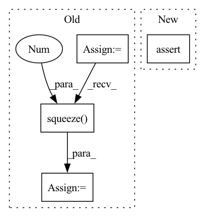

Pattern ID :38675
Before Change
assert channels == self.config.C
// Treat repetitions as additional channels at this point
x = x.reshape(batch_size, 1, channels * repetitions, 1)
// Apply C sum node outputs
x = self.root(x)
// Remove repetition dimension
x = x.squeeze(3 )
// Remove in_features dimension
x = x.squeeze(1)
After Change
x = x.squeeze(1).squeeze(1)
// Final shape check
assert x.shape == (batch_size, self.config.num_classes)
return x
In pattern: SUPERPATTERN
Frequency: 3
Non-data size: 4
Instances Fragment ID: 110627256
Project Name: braun-steven/simple-einet
Commit Name: 6c0a0ca7de9dfbed9f4b0eebd0e015cf76002c2b
Time: 2022-01-05
Author: steven.lang.mz@gmail.com
File Name: simple_einet/einet.py
M Class Name: Einet
N Class Name: Einet
M Method Name: forward(3)
N Method Name: forward(3)
M Parent Class: nn.Module
N Parent Class: nn.Module
M File Name: simple_einet/einet.py
N File Name: simple_einet/einet.py
M Start Line: 131
M End Line: 148
N Start Line: 145
N End Line: 157
Before Change
//hidden = [batch size, dec hid dim]
//encoder_outputs = [src len, batch size, enc hid dim * 2]
input = input.unsqueeze(0)
//input = [1, batch size]
embedded = self.dropout(self.embedding(input))
//embedded = [1, batch size, emb dim]
a = self.attention(hidden, encoder_outputs)
//a = [batch size, src len]
a = a.unsqueeze(1)
//a = [batch size, 1, src len]
encoder_outputs = encoder_outputs.permute(1, 0, 2)
//encoder_outputs = [batch size, src len, enc hid dim * 2]
weighted = torch.bmm(a, encoder_outputs)
//weighted = [batch size, 1, enc hid dim * 2]
weighted = weighted.permute(1, 0, 2)
//weighted = [1, batch size, enc hid dim * 2]
rnn_input = torch.cat((embedded, weighted), dim = 2)
//rnn_input = [1, batch size, (enc hid dim * 2) + emb dim]
output, hidden = self.rnn(rnn_input, hidden.unsqueeze(0))
//output = [seq len, batch size, dec hid dim * n directions]
//hidden = [n layers * n directions, batch size, dec hid dim]
//seq len, n layers and n directions will always be 1 in this decoder, therefore:
//output = [1, batch size, dec hid dim]
//hidden = [1, batch size, dec hid dim]
//this also means that output == hidden
assert (output == hidden).all()
embedded = embedded.squeeze(0 )
output = output.squeeze(0)
weighted = weighted.squeeze(0)
prediction = self.fc_out(torch.cat((output, weighted, embedded), dim = 1))After Change
//output = [batch size, 1, dec hid dim]
//hidden = [1, batch size, dec hid dim]
//this also means that output == hidden
assert (output == hidden.transpose(1, 0)).all()
prediction = self.fc_out(torch.cat((output, weighted, embedded), dim = 2))
//prediction = [batch size, seq_len, output dim] Fragment ID: 110627257
Project Name: hyliush/deep-time-series
Commit Name: b119a9066bd15a0c5fa50ac440ec8fdc8c61cef6
Time: 2022-03-18
Author: 49185490+hyliush@users.noreply.github.com
File Name: models/seq2seq/GruAttention.py
M Class Name: Decoder
N Class Name: Decoder
M Method Name: forward(4)
N Method Name: forward(4)
M Parent Class: nn.Module
N Parent Class: nn.Module
M File Name: models/seq2seq/GruAttention.py
N File Name: models/seq2seq/GruAttention.py
M Start Line: 103
M End Line: 148
N Start Line: 128
N End Line: 128
Before Change
assert channels == self.config.C
// Treat repetitions as additional channels at this point
x = x.reshape(batch_size, 1, channels * repetitions, 1)
// Apply C sum node outputs
x = self.root(x)
// Remove repetition dimension
x = x.squeeze(3 )
// Remove in_features dimension
x = x.squeeze(1)
After Change
if x.dim() == 4: // [N, C, H, W]
x = x.view(x.shape[0], self.config.num_channels, -1)
assert x.dim() == 3
assert x.shape[1] == self.config.num_channels
// Apply leaf distributions (replace marginalization indicators with 0.0 first) Fragment ID: 110627258
Project Name: braun-steven/simple-einet
Commit Name: e657fc668bd0f87f5e622a8b2549cd9e8ade437a
Time: 2022-01-11
Author: steven.lang.mz@gmail.com
File Name: simple_einet/einet.py
M Class Name: Einet
N Class Name: Einet
M Method Name: forward(3)
N Method Name: forward(3)
M Parent Class: nn.Module
N Parent Class: nn.Module
M File Name: simple_einet/einet.py
N File Name: simple_einet/einet.py
M Start Line: 128
M End Line: 145
N Start Line: 123
N End Line: 150